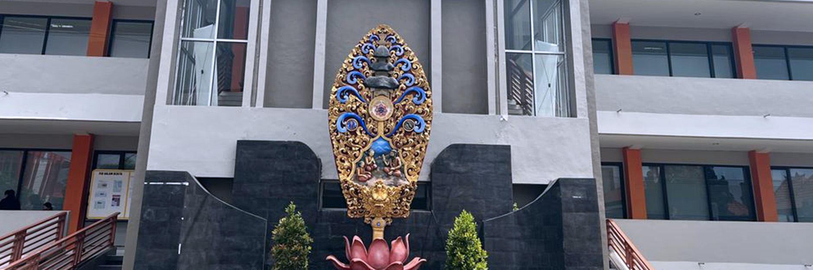
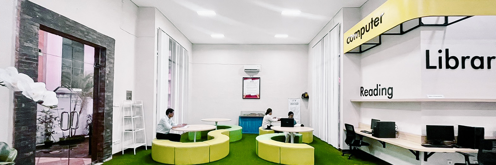
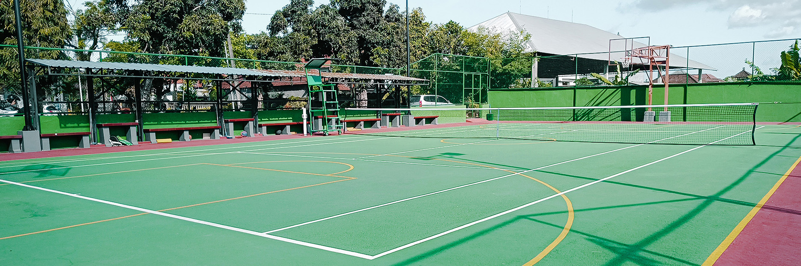
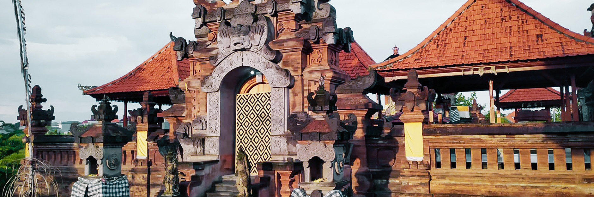

Administrasi Publik
Fakultas Ilmu Sosial dan Humaniora — memahami pemerintahan, kebijakan, dan pelayanan publik yang berjalan berdampingan dengan adat Bali.
Jalur masuk tersedia di portal PMB
Lihat jalur pendaftaran →Universitas Ngurah Rai · Penatih, Denpasar Timur
Didirikan 23 Mei 1979 oleh Yayasan Jagadhita Denpasar, UNR adalah universitas swasta tertua kedua di Bali. Kami membuka pendidikan berkualitas dan terjangkau berlandaskan nilai Tri Hita Karana.
Identitas UNR: keberanian I Gusti Ngurah Rai, keseimbangan Tri Hita Karana
Kenapa UNR
Pendidikan tidak hanya mentransfer ilmu, tetapi membentuk karakter yang menjaga hubungan dengan Tuhan, sesama, dan lingkungan.
Mahasiswa belajar di Denpasar: hukum berdekatan dengan lembaga, bisnis dekat dengan pariwisata, teknik dekat dengan pembangunan kota.
Sejak 1979 UNR hadir agar lebih banyak masyarakat Bali dan Nusa Tenggara bisa mengakses pendidikan tinggi berkualitas.
Visi resmi: menghasilkan SDM kompeten dan berdaya saing dalam IPTEK, berlandaskan kerakyatan dan Tri Hita Karana.
Sambutan Rektor
Di era yang penuh perubahan dan inovasi, portal ini kami persembahkan untuk masyarakat akademik, calon pemimpin masa depan, mitra strategis, dan siapa pun yang ingin menyelami semangat Universitas Ngurah Rai.
“Menjadi Universitas Unggulan Berkelas Dunia yang Berlandaskan Nilai-Nilai Tri Hita Karana untuk Kemaslahatan Bangsa dan Dunia.”
Setiap kebijakan diarahkan untuk mewujudkan visi itu — dengan tata kelola yang sehat, riset yang berdampak, dan regenerasi kepemimpinan.
Baca visi, misi, dan sejarah resmi →Program Studi
Sumber resmi: situs UNR dan portal PMB. Filter jenjang, atau buka halaman Fakultas untuk profil lengkap.
Fakultas Ilmu Sosial dan Humaniora — memahami pemerintahan, kebijakan, dan pelayanan publik yang berjalan berdampingan dengan adat Bali.
Jalur masuk tersedia di portal PMB
Lihat jalur pendaftaran →Fakultas Ekonomi dan Bisnis — menyiapkan lulusan kompeten di bisnis, UMKM, dan ekonomi jasa yang menjadi tulang punggung Bali.
Jalur masuk tersedia di portal PMB
Lihat jalur pendaftaran →Fakultas Hukum — mencetak sarjana hukum yang menguasai norma formal sekaligus kearifan lokal dan praktik peradilan.
Jalur masuk tersedia di portal PMB
Lihat jalur pendaftaran →Fakultas Sains dan Teknologi — konstruksi, infrastruktur, dan laboratorium beton serta material jalan di kampus 2,4 hektar.
Jalur masuk tersedia di portal PMB
Lihat jalur pendaftaran →Merancang ruang yang berdialog dengan iklim tropis, budaya Bali, dan pertumbuhan kota Denpasar.
Jalur masuk tersedia di portal PMB
Lihat jalur pendaftaran →Dibuka 2024 di bawah Fakultas Sains dan Teknologi untuk jenjang profesi insinyur.
Biaya daftar resmi: Rp 500.000
Cek gelombang di PMB →Program pascasarjana pertama UNR (dibuka 2008) untuk penguatan kapasitas kebijakan dan pelayanan publik.
Informasi gelombang di portal PMB
Lihat program S2 →Dibuka 2014 — pendalaman keilmuan hukum bagi praktisi, akademisi, dan aparatur.
Informasi gelombang di portal PMB
Lihat program S2 →Program baru 2024 — merancang inovasi organisasi dan bisnis di tengah ekonomi kreatif Bali.
Informasi gelombang di portal PMB
Lihat program S2 →Fasilitas
Foto fasilitas berikut diambil dari situs resmi Universitas Ngurah Rai.

Gedung perkuliahan dan pascasarjana di kampus Penatih.

Ruang baca dan koleksi untuk menunjang riset serta tugas akhir.

Tenis, basket, voli, futsal, bulu tangkis, dan sarana olahraga lain.
Kehidupan Kampus
Galeri memakai foto resmi UNR: gedung, pura kampus, perpustakaan, lapangan, dan kegiatan mahasiswa.
Ikuti kehidupan kampus di Instagram @universitas_ngurahrai dan berita resmi di unr.ac.id.

Tri Hita Karana, Bukan Sekadar Kata
Diferensiasi misi UNR: menjadi pusat pendidikan tinggi unggul berbasis nilai Tri Hita Karana yang inklusif, inovatif, dan berdaya saing global.
Pelajari lebih lanjut tentang Tri Hita Karana →Kata Alumni
Testimoni dan foto yang ditampilkan di situs resmi Universitas Ngurah Rai.